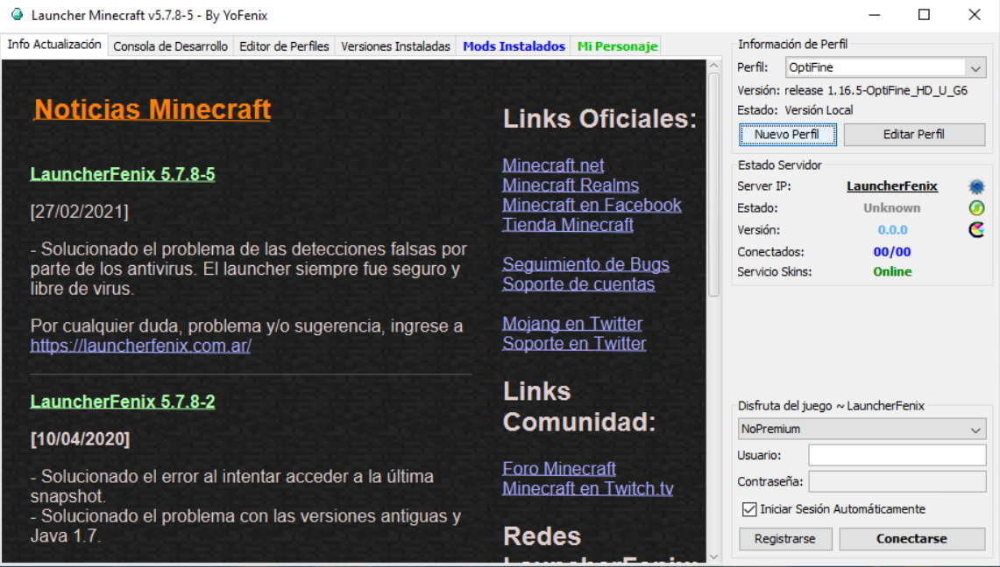
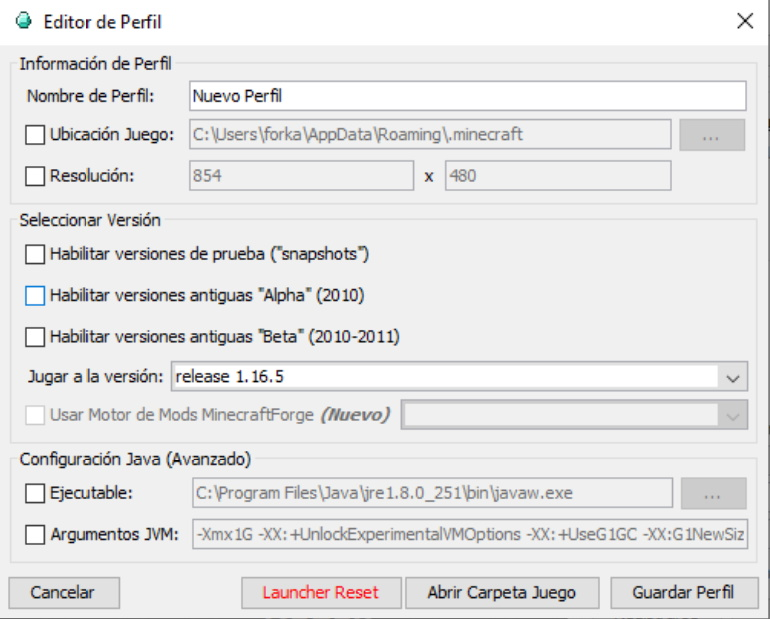
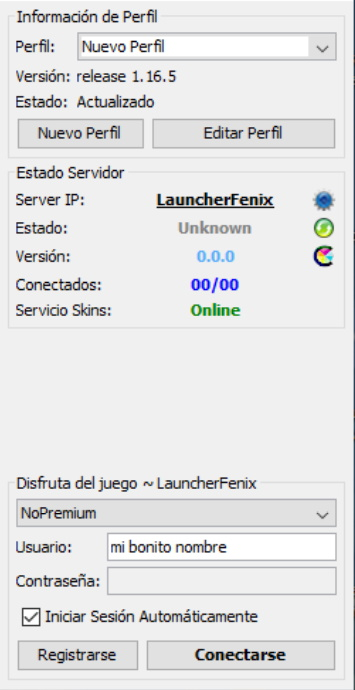
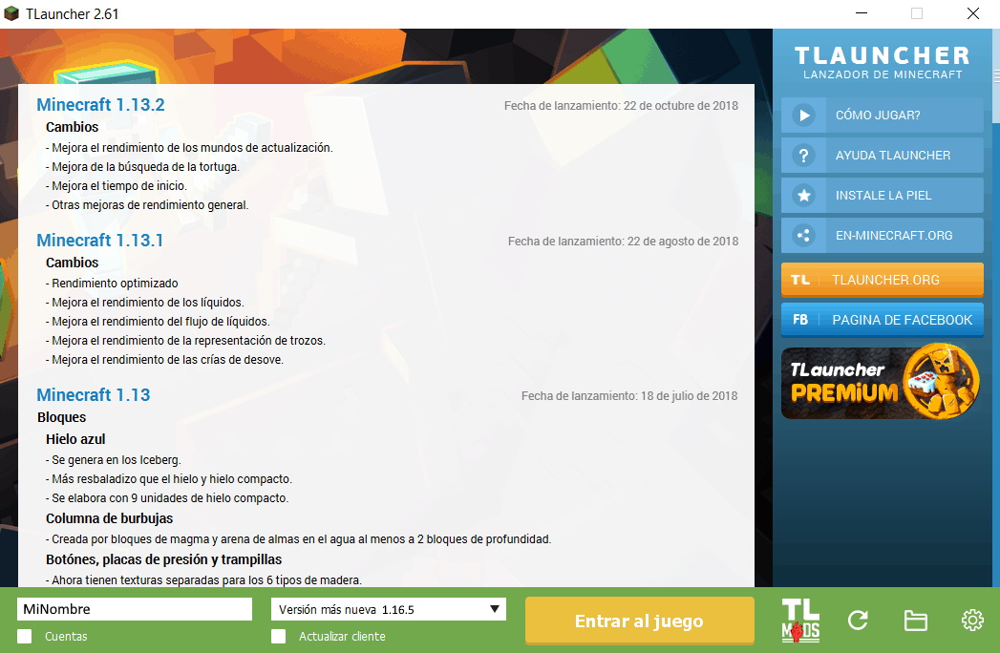
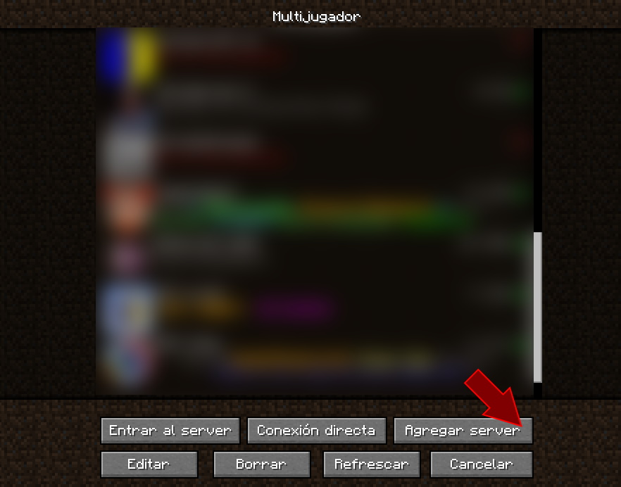
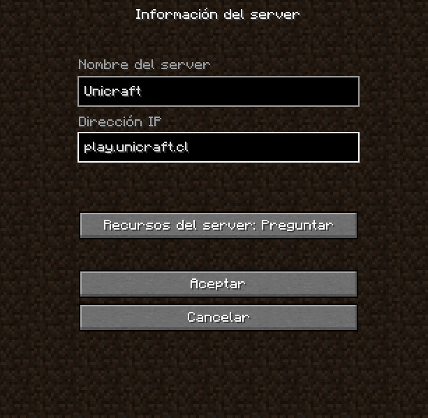

La opción más fácil y recomendable es utilizando el cliente oficial de Minecraft.
Este es un juego pagado, y tiene un costo de 26.95 Dólares (19000 CLP).
Se compra y se descarga de la página Minecraft.net
Este es el primer launcher no-oficial que recomiendo, permite tanto el uso de cuentas Premium como
No Premium.
Es bastante customizable, y es una muy buena alternativa si quieres probar el juego antes de comprarlo.
Se encuentra en el siguiente link: LauncherFenix
Si por alguna razón no te funciona el launcher anterior, puedes utilizar este.
Ambos launchers son buenos, solo que por alguna razón con el Tlauncher a veces no se visualizan los skins correctamente.
Se encuentra en el siguiente link: TLauncher
Debido a que configurar el cliente oficial de Minecraft es muy simple, lo saltaré en esta ocasión.
Lo único importante es seleccionar la versión 1.16.5.
Al apenas abrir este launcher tendremos la siguiente ventana:
Aquí nos vamos a donde dice "Nuevo Perfil y se abre otra ventana:
 
Acá solo nos fijamos que "Jugar a la versión:" esté seleccionado "release 1.16.5"
Podemos configurar otras opciones si gustamos y sabemos lo que estamos haciendo.
Cerramos y volvemos a la pantalla principal, ahí seleccionamos "NoPremium",
ponemos cualquier nombre
en "Usuario" y no es necesario poner contraseña. Luego conectarse y ya está.
el Tlauncher es algo más simple, luego de instalarlo y abrirlo tendremos la siguiente ventana:
Aquí solo, ponemos el nombre que queramos usar en "MiNombre" y la versión 1.16.5. Luego "Entrar al Juego".
Cliqueamos donde dice "Multijugador."
Acá, tenemos que agregar el servidor, cliqueamos en "Agregar server" y escribmos lo siguiente:

Para el nombre del server puede ser cualquier cosa, pero en este caso yo puse "Unicraft".
luego la dirección IP tiene que ser: play.unicraft.cl
Luego, "Aceptar".
Seleccionamos Unicraft y presionamos "Entrar al Server".
Dentro del servidor el lobby tendrá este aspecto.
Importante: Si utilizan un cliente No Premium, debes registrarte cuando entres.
Para registrarte solo escribes "/register contraseña contraseña" donde la contraseña la inventas tú y esta contraseña
estará asociada a tu nombre.
En esta parte si seguimos hacia adelante podemos ir a la UDEC.
Para ir a la UFRO tenemos que ir hacia la derecha donde esta mi personaje:
Solo tienen que hacerme click derecho y serán transportados a la UFRO!
(El servidor abre a las 18:00 del 22-03-2021).
Si eres usuario No Premium y por casualidad utilizas un nombre de un usuario Premium
el servidor no te dejará entrar, por lo que deberás utilizar otro nombre.